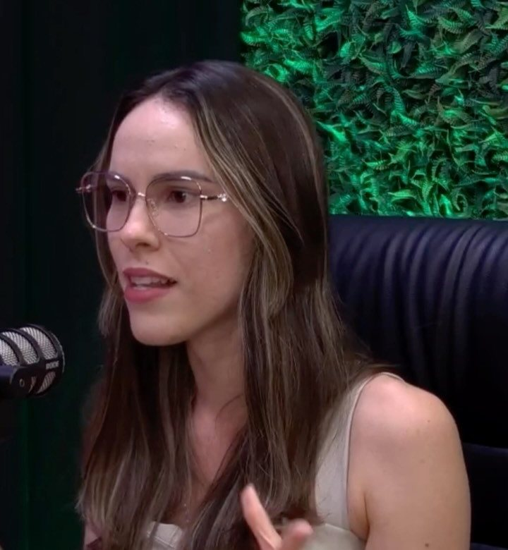

Início · Fases · Introdução alimentar
Introdução alimentar: uma novidade de cada vez.
É o tema que a Camila mais publica — e o que as avaliações mais citam. “Muito esclarecedora e me deu segurança para iniciar!”, escreveu Natália E. no Google. Informação geral; o plano é individual, definido na consulta.
Entenda
Quando começar
A introdução alimentar costuma começar por volta dos 6 meses, quando o bebê mostra sinais de prontidão — como sustentar o tronco sentado e se interessar pela comida. O momento é combinado com o pediatra.
A consulta antes do início ajuda a chegar a esse dia com as dúvidas resolvidas: o que oferecer, em que textura, como organizar as refeições.
Métodos
BLW ou tradicional
Tradicional
Alimentos amassados, oferecidos com colher, com a textura evoluindo aos poucos.
BLW
O bebê pega os alimentos em pedaços e leva à boca, com cortes pensados para a idade.
Misto
Muitas famílias combinam os dois, conforme a rotina e o bebê.
Cortes
Forma e tamanho dos pedaços mudam com o desenvolvimento.
Não existe um caminho que sirva para todos. A escolha é conversada com a família, na consulta.
Na voz dela
Uma novidade de cada vez
“Uma novidade de cada vez! Não precisa ter pressa para apresentar os alimentos para o seu bebê na introdução alimentar. Isso não significa restringir a variedade ao longo do dia! … Assim você constrói um repertório alimentar rico e seguro.”
Legenda no Instagram · ver a publicaçãoOferecer um alimento novo por vez ajuda a família a observar como o bebê reage a ele, sem deixar de variar as refeições com o que ele já conhece.
Cuidado
Segurança à mesa
- Mel: só depois de 1 ano.
- Sal e açúcar: fora das preparações do bebê, como orienta o pediatra.
- Postura: bebê sentado, sempre com um adulto por perto.
- Alimentos duros e redondos: cortados ou adaptados para a idade.
“…passar mel nela antes de 1 ano não é uma adaptação segura. O mel pode carregar esporos da bactéria responsável pelo botulismo infantil.”Camila Rheinschmitt, no Instagram · ver a publicação
Em outra legenda, ela sugere uma troca para os pequenos: “Para os menores de 3 anos, a pipoca de sagu é uma substituição mais adequada”.
Engasgo
Medo de engasgo

O medo de engasgo é uma das dúvidas mais comuns. Em uma conversa com o perfil @juntospelonascimento, a Camila falou sobre como oferecer os alimentos com mais segurança.
Postura, cortes adequados à idade e um adulto atento fazem parte da rotina. Aprender primeiros socorros para bebês é uma boa preparação para a família.
Consulta
A consulta de introdução alimentar
- EscutaAmamentação ou fórmula, desenvolvimento, rotina e dúvidas da família.
- AvaliaçãoCurvas da caderneta e alimentação da casa.
- OrientaçãoMétodo, cortes, texturas e cardápio para as primeiras semanas.
- RetornoAjustes conforme o bebê avança.
Alergia alimentar, como a alergia à proteína do leite de vaca, família vegetariana ou bebê prematuro: o plano é feito junto com o pediatra.
Dúvidas frequentes
Perguntas comuns
BLW é mais indicado que o tradicional?
Não há um método que sirva para todos. A escolha depende do bebê e da família, e é conversada na consulta.
Posso dar mel ao bebê?
Não antes de 1 ano, por causa do risco de botulismo infantil, como a Camila explica no Instagram.
Os pais podem ir juntos à consulta?
Pode ser bom: quem cuida das refeições do bebê aproveita a conversa. Combine pelo WhatsApp.
Agende
Comece pela primeira consulta.
No Edifício Mais Empresarial, em Buraquinho, Lauro de Freitas. O agendamento é pelo WhatsApp (71) 99726-6787.